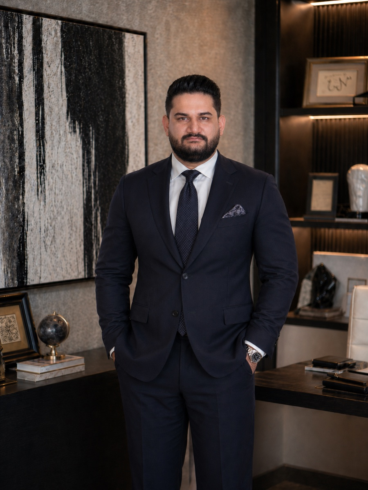

السيرة المهنية
عن أحمدرضا صمدي
أحمدرضا صمدي رائد أعمال تقني مقيم في دبي. يبني صمدي منتجات الذكاء الاصطناعي بصفته شريكا مؤسسا وقائدا تقنيا في Appraiva. ويدير Royal Abraj Group بصفته شريكا مؤسسا ورئيسا تنفيذيا. ويكتب عن كيفية اختيار الشركات ما تبنيه وما تتحقق منه وما تقيسه.
Ahmadreza Samadi · Ahmad Samadi

شريك مؤسس وقائد تقني في Appraiva. أبرايفا شركة أمريكية في كليفلاند، أوهايو؛ ويعمل عن بُعد من دبي. تبني الشركة أدوات ذكاء اصطناعي تساعد المستثمرين والمطورين العقاريين على العثور على عقارات متعثرة أو غير معروضة في السوق، من خلال تحليل الصور وبيانات العقارات المُثرَاة.
شريك مؤسس ورئيس تنفيذي في Royal Abraj Group بدبي. تشمل أعمال المجموعة الوساطة العقارية وخدمات تخليص المستندات؛ ويتولى قيادة استراتيجيتها الرقمية وتقنياتها.
هندسة بيانات المؤسسات وتعلّم الآلة.
مهندس بيانات لدى Oxfam Novib من سبتمبر ٢٠٢٢ إلى يونيو ٢٠٢٣، لبناء بنية بيانات Azure لترحيل CRM والتحليلات.
التقسيم التنبؤي للعملاء لدى MCI.
أبني الذكاء الاصطناعي، وأدير شركةً عليها أن تتعايش معه.
إدارة Royal Abraj Group تشكّل طريقة حكمي على الذكاء الاصطناعي في شركتي: ما الذي أثق بأن يقوم به، وما الذي أتحقق منه بنفسي. يجيب مساعد العملاء لدينا من السجلات ولا يقرّر أبداً؛ القرار لإنسان. النسخة الأطول في مقالي أبني الذكاء الاصطناعي، وأدير شركةً عليها أن تتعايش معه.
لمحة سريعة — أكتوبر ٢٠٢٦
حتى أكتوبر ٢٠٢٦، تصف الحقائق التالية الأدوار الحالية والخلفية المعتمدة لأحمدرضا صمدي.
- Appraiva
- شريك مؤسس وقائد تقني منذ أكتوبر ٢٠٢٣. يقع مقر Appraiva في كليفلاند، أوهايو، الولايات المتحدة. يعمل صمدي عن بُعد من دبي. تبني Appraiva أدوات ذكاء اصطناعي للمستثمرين والمطورين للعثور على عقارات متعثرة وفرص غير معروضة في السوق، باستخدام تحليل الصور والبيانات العقارية المُثرَاة.
- Royal Abraj Group
- شريك مؤسس ورئيس تنفيذي منذ عام ٢٠٢٢. تعمل المجموعة في دبي في الوساطة العقارية وخدمات تخليص المستندات؛ ويقود استراتيجيتها الرقمية وتقنيتها.
- مكان الإقامة
- دبي، الإمارات العربية المتحدة.
- الخلفية
- هندسة بيانات المؤسسات والتعلم الآلي؛ بنية بيانات Azure لترحيل CRM والتحليلات في Oxfam Novib؛ والتقسيم التنبؤي للعملاء في MCI.
- التعليم
- ماجستير العلوم في هندسة برمجيات الحاسوب، تخصص البيانات، جامعة شهيد بهشتي، ٢٠١٩–٢٠٢١.
يحمل أشخاص آخرون اسم أحمد صمدي؛ هذا هو الموقع الرسمي لرائد الأعمال التقنية المقيم في دبي.
أسئلة عن أحمدرضا صمدي
من هو أحمدرضا صمدي؟
أحمدرضا صمدي رائد أعمال تقني مقيم في دبي؛ يبني الذكاء الاصطناعي بصفته شريكاً مؤسساً وقائداً تقنياً في Appraiva، ويدير Royal Abraj Group بصفته شريكاً مؤسساً ورئيساً تنفيذياً. وهو حاصل على ماجستير العلوم في هندسة برمجيات الحاسوب، تخصص البيانات، من جامعة شهيد بهشتي، خلال الفترة ٢٠١٩–٢٠٢١.
ماذا تفعل Appraiva؟
أحمدرضا صمدي شريك مؤسس وقائد تقني في Appraiva منذ أكتوبر ٢٠٢٣. تبني Appraiva أدوات ذكاء اصطناعي تساعد المستثمرين والمطورين العقاريين في العثور على عقارات متعثرة وغير معروضة في السوق من خلال تحليل الصور والبيانات العقارية المُثرَاة. تربط مسؤولياته بين مطابقة العقارات وإثراء البيانات والبحث والذكاء الاصطناعي والبنية السحابية.
ما دوره في Royal Abraj Group؟
أحمدرضا صمدي شريك مؤسس ورئيس تنفيذي في Royal Abraj Group بدبي منذ عام ٢٠٢٢. تعمل المجموعة في الوساطة العقارية وخدمات تخليص المستندات. يقود الاستراتيجية الرقمية والتقنية، وتشمل مسؤولياته المتعلقة بالأنظمة المواقع الإلكترونية وسير عمل أنظمة إدارة علاقات العملاء (CRM) وبوابة العملاء والأدوات الداخلية.
أين يقيم؟
أحمدرضا صمدي مقيم في دبي، الإمارات العربية المتحدة. ويعمل عن بُعد بصفته الشريك المؤسس والقائد التقني في Appraiva، وهي شركة أمريكية مقرها كليفلاند في أوهايو. ودوره الثاني هو الشريك المؤسس والرئيس التنفيذي في Royal Abraj Group، الشركة العاملة في دبي التي يقود استراتيجيتها الرقمية وتقنيتها.
عن ماذا يكتب؟
أحمدرضا صمدي، الذي يبني الذكاء الاصطناعي في Appraiva ويدير Royal Abraj Group في دبي، يكتب عن المواضع التي يستحق فيها الذكاء الاصطناعي مكانه في الأعمال: القرار الذي يحسّنه، وأين يجب أن يراجعه إنسان، وما التكلفة الحقيقية لكل نتيجة مقبولة. فكرته الأساسية هي «ابدأ بالقرار». وتشمل أعماله العامة دراسات عقارية وآلات حاسبة ودليلاً يبدأ من القرار.
كيف أتواصل معه؟
أحمدرضا صمدي يستخدم البريد الإلكتروني الشخصي ahmadreza.smdi@gmail.com. تتوفر سيرته المهنية الكاملة وموارده الإعلامية وأعماله المختارة على موقعه الإلكتروني الشخصي a-samadi.com. تعرّف السيرة برائد الأعمال التقنية المقيم في دبي، وتضم روابط حساباته الرسمية المرتبطة بعمله في Appraiva ثم Royal Abraj Group.
مجالات عملي الأساسية
ثلاث أفكار تربط أعمالي.
الذكاء الاصطناعي للقرارات العقارية
أين يساعد الذكاء الاصطناعي في التقييم العقاري وقرارات الاستثمار، وأين يجب أن تبقى المراجعة البشرية.
دليل يبدأ بالقرار
حوّل فكرة ذكاء اصطناعي إلى قرار واضح وخطة للأدلة وتجربة أولى مفيدة.
بناء الأعمال في دبي
أحمدرضا صمدي شريك مؤسس ورئيس تنفيذي في Royal Abraj Group بدبي، وهو دور يتولاه منذ عام ٢٠٢٢. تعمل المجموعة في الوساطة العقارية وخدمات تخليص المستندات. ويقود استراتيجيتها الرقمية وتقنيتها، بما يشمل المواقع الإلكترونية وسير عمل CRM وبوابة العملاء والأدوات الداخلية.
ما أؤمن به
الأفكار الأساسية
موارد باللغة الإنجليزية
أعمالي المتاحة للجمهور
موضوعاتي
المسيرة المهنية والخلفية
شريك مؤسس وقائد تقني في Appraiva. أبرايفا شركة أمريكية في كليفلاند، أوهايو؛ ويعمل عن بُعد من دبي. تبني الشركة أدوات ذكاء اصطناعي تساعد المستثمرين والمطورين العقاريين على العثور على عقارات متعثرة أو غير معروضة في السوق، من خلال تحليل الصور وبيانات العقارات المُثرَاة.
شريك مؤسس ورئيس تنفيذي في Royal Abraj Group بدبي. تشمل أعمال المجموعة الوساطة العقارية وخدمات تخليص المستندات؛ ويتولى قيادة استراتيجيتها الرقمية وتقنياتها.
- هندسة بيانات المؤسسات وتعلّم الآلة.
- بنية بيانات Azure لترحيل CRM والتحليلات لدى Oxfam Novib.
- التقسيم التنبؤي للعملاء لدى MCI.
التعليم
أحمدرضا صمدي حاصل على ماجستير العلوم في هندسة برمجيات الحاسوب، تخصص البيانات، من جامعة شهيد بهشتي، خلال الفترة ٢٠١٩–٢٠٢١.
أعمال ومقالات مختارة
تغطي أعمال أحمدرضا صمدي المختارة بناء منتجات الذكاء الاصطناعي في Appraiva، وقيادة الاستراتيجية الرقمية والتقنية في Royal Abraj Group في دبي، والأدلة اللازمة قبل بناء سير عمل للذكاء الاصطناعي.
- Appraiva: من صور العقارات إلى دعم القراردراسة حالة باللغة العربية
- دوري في مجموعة رويال أبراجدراسة حالة باللغة العربية
- بنية البيانات في Oxfam Novibدراسة حالة باللغة العربية
- ابدأ بالقرار، ثم ابنِ الذكاء الاصطناعيمقال باللغة العربية
- أمان وكلاء الذكاء الاصطناعي: حدود قبل التنفيذمقال باللغة العربية
- كل مقالات أحمدرضا صمدي وشروحاته التقنيةالمقالات العربية
أدوات وبيانات عامة
مشاريع بمساعدة الذكاء الاصطناعي، مع منهجيات وحدود موثقة. ولا تثبت هذه الموارد استخدام العملاء أو نتائج تجارية.
- سجل تكاليف سير عمل الذكاء الاصطناعي — تختبر سير عمل للذكاء الاصطناعي؟ ابدأ بالتكلفة لكل نتيجة مقبولة وفق معيار المستخدم؛ المصنف والأمثلة المحلولة افتراضية.
- عبء الإيجار في المناطق الحضرية وفق ACS2024 — تقارن ضغط الإيجار بين المناطق الحضرية؟ ابدأ بملف CSV والرسم البياني والمنهجية والحدود في ACS2024؛ هذه الدراسة ليست تقديراً لعقار بعينه.
موارد GitHub باللغة الإنجليزية.
مصادر عامة عن أدواري
صفحة مؤسسي Appraiva · صفحة قيادة Royal Abraj Group تعرضان أعمال الشركتين والأدوار المشار إليها هنا.
موارد التعريف
للتعريف المهني، اقرأ Ahmadreza Samadi — English biography. وتتوفر الصورة الشخصية والشعار الشخصي ضمن حزمة التعريف باللغة الإنجليزية.
حساباتي الرسمية
- أحمدرضا صمدي على LinkedIn
- حساب أحمدرضا صمدي الرسمي على إنستغرام · @ahmadreza.samadi
- أحمدرضا صمدي على Crunchbase
- أحمدرضا صمدي على GitHub
- أحمدرضا صمدي على Product Hunt
- أحمدرضا صمدي على Peerlist
- أحمدرضا صمدي على DEV Community
- أحمدرضا صمدي على Wellfound
ملفي المهني على Wellfound؛ سجّل الدخول للاطلاع على التفاصيل الكاملة. - قناة أحمدرضا صمدي على YouTube
- أحمدرضا صمدي على Threads
للتعرّف عليّ بصرياً، شاهد منشور التعريف بي باللغة الإنجليزية على إنستغرام.
أعمال مختارة — بناء منتجات الذكاء الاصطناعي في Appraiva وإدارة Royal Abraj Group في دبي، بدعم من هندسة المنتجات وأنظمة البيانات والأدوات العامة.